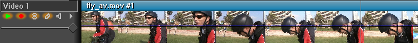
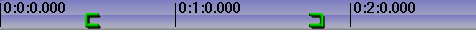
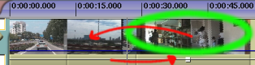
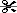
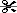

| [ << ] | [ >> ] | [Top] | [Contents] | [Index] | [ ? ] |
Denbora-lerroa eta gailuen eragiketen menu guztien sarrerako puntuak ditu. Denbora-lerroak pisten pila bertikal bat du denboraren adierazpen horizontalarekin. Honek errendatze-eragiketen irteera eta fitxategiak gordetzean zer gordetzen den definitzen du. Denbora-lerroaren ezkerretara atributuen panela dago, pista bakoitzari eragiten dieten aukerekin.
Denbora-lerroa
Leihoa menuan menu nagusiei eragiten dien aukerak aurki ditzakezu. Menuko Posizio lehenetsiak elementuak leiho guztien posizioak aldatzen ditu 4 pantailako muntatze-konfiguraziora. Bi monitore edukiz gero, Posizio lehenetsiak aukerarekin leiho guztiak monitore batean kokatzen dira.
Programaren leihoak nabigatzeko hainbat funtzionalitate ditu, eta denbora-lerroa memorian egituratua dagoen bezala bistaraten du: pistak bertikalki pilatu eta denbora horizontalean zabaltzen dira. Korritze-barra horizontalarekin denboran zehar mugi zaitezke. Korritze-barra bertikalarekin pisten artean mugi zaitezke.

Bideoaren pistak
Bideoaren pistak zure bideo eta klipen iraupena adierazten dute, benetako argazkiak taula batean hasieratik amaierara gordeko bazenitu bezala. Pistan ikus ditzakezun banakako irudiak denbora-lerroko une zehatz bateko laginak dira.

Audioaren pistak
Audioaren pistak zure multimediaren soinua adierazten dute uhin formarekin.
Filmaren analogiari jarraituz, zinta magnetoskopikoa horizontalki 'ikustea'
bezalakoa da.
Pistaren zooma horizontalki eta bertikalki doi dezakezu, zoomaren panel-barra
erabiliz.
Audioaren 'uhin formaren' zooma doi dezakezu zoomaren panel-barra erabiliz.
Pistaren ezkerreko kontrolak atributu-panela izena jasotzen du. Atributuen panela
pisten protaera kontrolatzeko erabiltzen da.
Pistan nabigatzeak bai audioaren bai bideoaren pistarekin du zerikusia, audio edo bideoaren pista bat hautatzean pistan zehar denbora batera joan zaitezke. Programaren leihoak nabigatzeko funtzionalitate asko ditu, eta denbora-lerroa memorian egituratua dagoen bezala bistaraten du.
Korritze-barra horizontala denboran zehar mugitzeko erabiltzen da.
Korritze-barra bertikala pisten artean mugitzeko erabiltzen da.
Tresna grafikoetaz gain, teklatua erabil dezakezu nabigatzeko. Arau orokorra bezala, teklatuarekin nabigatzea azkarragoa da saguarekin nabigatzea baino. Erabili teklatuko Orrialdea gora eta Orrialdea behera teklak pistetan gora eta behera mugitzeko.
Denbora-lerroaren amaiera baino harutzago joan behar denean korritze-barrak ez du uzten. Erabili teklatuko Eskuinera tekla denbora-lerroaren amaiera igarotzeko.
Erabili teklatuko Hasiera eta Amaiera teklak denbora-lerroaren hasierara eta amaierara joateko. I-beam moduan eduki Maius tekla sakatuta Hasiera edo Amaiera tekla sakatzen duzun bitartean denbora-lerroko txertatzeko puntutik tekla sakatu den arteeko eskualdea hautatzeko.
Denbora-lerroaren azpian zoomaren panela aurki dezakezu. Zoomaren panelak balio hauek ditu: laginaren zooma, anplitudea, pistaren zooma eta kurbaren zooma. Korritze-barren funtzionalitateaz gain, balio hauek denbora-lerroan kokatzeko tresna nagusiak dira.

Laginaren zooma aldatzeak denbora-lerroan bistaratutako denboraren unitatea tamainaz aldatzea dakar. Multimedia banakako fotogrametan ikus dezakezu, edo baita proiektuaren luzera osoa ere. Balioa zenbat eta txikiagoa izan, are eta fotograma gehiago bistaratuko dira pantailan. Saguak gurpila badu eta X11, edo Xorg, zerbitzariarekin funtzionatzen badu, sagua laginaren zoomaren gainean kokatu eta gurpilarekin zooma handiagotu edo txikiagotu dezakezu.
Anplitudeak audioari soilik eragiten dio. Uhin formaren luzera zehazten du, uhin forma marrazten bada.
Pistaren zoomak pista guztiei eragiten die. Pista bakoitzaren altuerari eragiten dio. Pistaren zooma aldatzean, anplitudearen zoomak konpentsatzen du audioaren uhin forma proportzionalki bistaratzeko.
Kurbaren zoomak pista guztietako kurbei eragiten die.
Kurben anplitudea eta desplazamendua zehazten ditu.
Zoomaren geziek kurbaren anplitudea aldatzen dute,
hala ere kurbaren desplazamendua aldatzeko bide bakarra
doitu kurbak botoia erabiltzea da.

Erabili Ezkerrera eta Eskuinera teklak denboran zehar urrats txikieta mugitzeko. Denbora-lerroaren amaiera baino harutzago joan behar denean korritze-barrak ez du uzten. Erabili teklatuko Eskuinera tekla denbora-lerroaren amaiera igarotzeko.
Erabili teklatuko Gora eta Behera geziak laginaren zooma aldatzeko (2 balioarekin bidertuz/zatituz).
Ktrl+Gora eta Ktrl+Behera teklak aldi berean sakatzean anplitudearen zooma aldatzen da.
Ktrl+OrriGora eta Ktrl+OrriBehera teklak aldi berean sakatzean pistaren zooma aldatzen da.
Alt+Gora eta Alt+Behera teklak aldi berean sakatzean kurbaren anplitudea aldatzen da.
Pista bakoitzak bere laster-menua du. Pistaren laster-menua bistaratzeko egin klik saguaren eskuineko botoiarekin pistan. Laster-menuak pistari eragiten dio, pista atributuen panelean ainguratuta egon edo ez. Pistaren menuak honako aukerak eskaintzen ditu:
Cinelerra abiatzen den aurreneko aldiz txertatzeko puntu keinukaria agertzen da programaren leihoan. Testu-prozesadore baten kurtsore baten bezala, txertatzeko puntuak denbora-lerroko lekua markatzen du programaren hurrengo aktibitatea non hasiko den adieraziz. Gainera, erreproduzitzeko abiapuntua adierazten du. Errendatzean, errendatuko den denbora-lerroko eskualdea zehazten du.
Txertatzeko puntua programa nagusian,
marra bertikal batekin markatuta 00:00.500 puntuan.
Normalean txertatzeko puntua lekuz alda daiteke denbora-barra barruan klik eginez. Etiketekin eta sarrerako edo irteerako puntuekin ilunduta ez dagoen denbora-barrako edozein eskualde puntu-beroa da, txertatzeko puntua berriro kokatzeko.

Denbora-barra nagusia
Eragiketa moduaren arabera, txertatzeko puntua denbora-lerroan klik eginez posizioz alda daiteke.
Txertatzeko puntuak bi eragiketa modu ditu:
Atributuen panelean gezia edo i-beam hautatzen den arabera zehazten da eragiketaren modua.

Muntatzeko moduaren botoiak
Gezia nabarmenduta bada, arrastatu eta jaregin modua gaitzen da. Arrastatu eta jaregin moduan, denbora-lerroan klik egitean ez da txertatzeko puntua posizioz aldatzen. Horren ordez, muntaketa osoa hautatzen da. Denbora-lerroan arrastatzean muntaketa aldatzen posizioz da, beste muntaketen mugetara atxikituz. Oso erabilgarria da audioaren erreprodukzio-zerrenda berriro ordenatzeko eta efektuak lekuz aldatzeko.
I-beam nabarmentzen bada, ebaki eta itsatsi modua gaitzen da. Ebaki eta itsatsi moduan, denbora-barran klik egitean txertatzeko puntua posizioz aldatzen da. Denbora-lerroan arrastatzean eskualde bat nabarmentzen da. Nabarmendutako eskualdea erreproduzituko den eskualdea izango da hurrengo erreprodukzioan, edo errendatuko den eskualdea errendatzean. Gainera, nabarmendutako eskualdean eragingo dute ebaki eta itsatsi eragiketek.

Pistak nabarmendutako eskualdearekin area berdearen barruan
erakusten dira
Denbora-lerroan Maius+klik egitea nabarmendutako eskualdea zabaltzen du.
Denbora-lerroan Klik bikoitza eginez kurtsorea kokatuta dagoen muntaketa osoa hautatzen da.
Txertatzeko puntua lekuz aldatzean eta eskualdeak hautatzean posizioak fotogrametara edo laginetara lerrokatzen dira. Bideoa muntatzean fotogrametara lerrokatzea nahi izango duzu. Audioa muntatzean laginetara lerrokatzea berriz. Hautatu zure hobespenak Ezarpenak -> Lerrokatu kurtsorea fotogrametara menuan.
Nabarmendutako eskualdea ebaki eta itsatsi eragiketek eragina izateko eskualdea bada, nola ebaki eta itsas dezaket arrastatu eta jaregin moduan? Kasu honetan, sarrerako/irteerako puntuak ezarri behar dituzu eragina izango duen eskualdea definitzeko.
Bi muntaketa moduetan ezar ditzakezu sarrerako/irteerako puntuak. Sarrerako/irteerako puntuek zehazten dute eragina izango duen eskualdea. Arrastatu eta jaregin moduan eragina izango duen eskualdea definitzeko soilik erabiltzen dira. Bai ebaki eta itsatsi moduan bai arrastatu eta jaregin moduan nabarmendutako eskualdeak sarrerako/irteerako puntuak gainjartzen ditu. Nabarmendutako eskualdea eta sarrerako/irteerako puntuak ezartzen badira, muntatze-eragiketek nabarmendutako eskualdean eragingo dute, eta ez ikusi egingo die sarrerako/irteerako puntuei. Eskualderik ez bada nabarmentzen, sarrerako/irteerako puntuak erabiliko dira.
Normalean, sarrerako/irteerako puntuek ez dute erreproduzioaren eskualdean eragiten. Sarrerako/irteerako puntuek erreprodukzioaren eskualdea zehazten dute baldin eta Ktrl tekla sakatuta edukitzen baduzu erreproduzitzeko komandoari deitzean.
Sarrerako/irteerako puntuak ezartzeko, joan denbora-barrara eta kokatu
txertatzeko puntua posizio batean. Hautatu  sarrerako puntuaren botoia.
Gero, joan sarrerako puntutik eskuinera
eta egin klik
sarrerako puntuaren botoia.
Gero, joan sarrerako puntutik eskuinera
eta egin klik  irteerako puntuaren botoian.
irteerako puntuaren botoian.

Denbora-barra sarrerako/irteerako puntuekin.
Sarrerako edo irteerako puntua hautatzen baduzu, txertatzeko puntua posizio horretara joango da. Sarrerako puntu bat hautatu ostean, sarrerako puntuaren botoian klik egitean sarrerako puntua ezabatu egingo da. Irteerako puntu bat hautatu ostean, irteerako puntuaren botoian klik egitean irteerako puntua ezabatu egingo da.
Sarrerako/irteerako puntuak existitzen diren unean, edonon eskualde bat hautatzen baduzu, puntu horiek posizioz aldatu egingo dira sarrerako/irteerako botoietan klik egitean.
Sarrerako/irteerako puntu batean Maius+klik egitean, txertatzeko puntuaren eta sarrerako/irteerako puntuaren arteko eskualdea nabarmenduko da.
Sarrerako/irteerako botoiak erabili ordez, [ eta ] teklak erabil ditzakezu sarrerako/irteerako puntuak txandakatzeko.
Bai ebaki eta itsatsi moduan bai arrastatu eta jaregin moduan sarrerako/irteerako puntuek nabarmendutako eskualdea gainjartzen dute. Nabarmendutako eskualdea eta sarrerako/irteerako puntuak ezartzen badira, nabarmendutako eskualdeak erreprodukzioari eragingo dio, eta sarrerako/irteerako puntuek muntatze-eragiketei. Nahasketarik ez sortze arren, une berean bi moduak batera ez edukitzea gomendatzen da.
Txertatzeko puntua eta sarrerako/irteerako puntuak erabili eragina izango duen eskualdea definitzeko, baina ez dizute denbora-lerroko posizio zehatzetan errez kokatzen utziko. Horretarako etiketak erabili.
Denbora-lerroko posizio zehatzetara joateko erabiltzen dira etiketak.
Leku batean txertatzeko puntua jartzean eta  etiketa botoian
klik egitean etiketa berri bat agertzen da denbora-lerroan.
etiketa botoian
klik egitean etiketa berri bat agertzen da denbora-lerroan.

Denbora-barra etiketarekin
Berdin dio zein diren zoomaren ezarpenak, etiketaren posizioan klik egitean txertatzeko puntua zehatz mehatz kokatuko da posizio horretan. Etiketa bat hautatuta dagoela etiketa botoian berriro klik egitean, hautatutako etiketa ezabatu egingo da.
Etiketa batean Maius+klik egitean nabarmendutako eskualdea zabaltzen da.
Etiketen artean klik bikoitza egitean etiketen arteko eskualdea nabarmentzen da.
Teklatuko l tekla sakatzeak etiketa botoiaren eragin berdina du.
Eskualdea nabarmenduta dagoenean etiketa botoia sakatzen baduzu, nabarmendutako eskualdearen hasieran eta amaieran etiketak sortuko dira. Hala ere, hasierak edo amaierak etiketa bat badu, existitzen den etiketa ezabatu egingo da.
Etiketek txertatzeko puntua posizioz alda dezakete hautatzen direnean,
baina etiketaren  zeharkako botoiekin ere zeharkatu daitezke. Etiketa ikuspegitik kanpo dagoenean, etiketaren zeharkako botoiek
denbora-lerroa berriro jartzen dute etiketa ikusgai izateko. Zeharkako etiketekin aritzeko
ere badaude laster-teklak.
zeharkako botoiekin ere zeharkatu daitezke. Etiketa ikuspegitik kanpo dagoenean, etiketaren zeharkako botoiek
denbora-lerroa berriro jartzen dute etiketa ikusgai izateko. Zeharkako etiketekin aritzeko
ere badaude laster-teklak.
Ktrl+Ezkerrera teklak sakatuz txertatzeko puntua aurreko etiketan jartzen da.
Ktrl+Eskuinera teklak sakatuz txertatzeko puntua hurrengo etiketan jartzen da.
Zeharkako etiketarekin atzera eta aurrera azkar joan zaitezke denbora-lerroan zehar. Horretaz gain, eskualdeak hautatzeko ere erabil ditzakezu.
Maius+Ktrl+Ezkerrera teklak sakatuz txertatzeko puntuaren eta aurreko etiketaren arteko eskualdea nabarmentzen da.
Maius+Ktrl+Eskuinera teklak sakatuz txertatzeko puntuaren eta hurrengo etiketaren arteko eskualdea nabarmentzen da.
Etiketa botoian edo l tekla eskuz sakatuz banan bana etiketa multzo bat ezabatzea nahiko nekagarria gerta daiteke. Etiketa multzo bat ezabatzeko aurrenik nabarmendu eskualdea. Gero erabili Editatu -> Garbitu etiketak menua. Sarrerako/irteerako puntuak existitzen badira, hauen arteko etiketak garbituko dira, nabarmendutako eskualdeari ez ikusi eginez.
Etiketak editatzea edo blokeatzea lekuz aldatzeko:
Ebaki eta itsatsi edizio moduan soilik, Ezarpenak menuan
"Editatu etiketak" gaituz edo desgaituz programaren tresna-barrako
 Blokeatu etiketak mugitzea botoia
ebaki, kopiatu edo itsatsi egingo da ainguratutako pistaren hautatutako eskualdean.
Blokeatu etiketak mugitzea botoia
ebaki, kopiatu edo itsatsi egingo da ainguratutako pistaren hautatutako eskualdean.
Honen antzera, baliabide baten hautatutako area ikustailetik denbora-lerroko
etiketen aurreko posizio batean lotzen bada, etiketa hauek denbora-barran
eskuinera eramango dira hautatutako arearen luzera kontutan izanik.
Etiketak denbora-barran mugitzea saihesteko, desgaitu "Editatu etiketak" aukera
edo gaitu Blokeatu etiketak mugitzea botoia.
Arrastatu eta jaregin edizio moduan etiketak beti daude blokeatuta denbora-barran,
nahiz eta "Editatu etiketak" aukera gaituta egon.
Muntaketak denboraren eta pisten domeinua eskatzen du. Denbora-lerroak pisten pila duenez, pistak nola sortu eta ordenatzen diren buruzko ardura hartzeaz gain, multimedia bat pista batean zenbat denboran agertzen den ere kontrolatu beharko duzu.
Denboraren domeinuan, Cinelerra-k hainbat bide eskaintzen ditu muntaketa prozesura hurbitzeko. Hiru metodo nagusiak honakoak dira: bi pantailetako muntaketa, arrastatu eta jaregin muntaketa eta ebaki eta itsatsi muntaketa.
Metodo guztiei aplikatzen zaien hainbat kontzeptu erabiltzen ditu Cinelerra-k muntaketan. Denbora-lerroa muntatze-erabaki guztiak adierazteko erabiltzen da. Denbora-lerroak leiho nagusiaren erdian pisten pila bat dauka. Gora, behera, ezkerrera eta eskuinera korritu daiteke eskuinean eta behean dituen korritze-barrekin. Saguaren gurpilarekin ere gora eta behera korritu daiteke.
Eskualde aktiboa: denbora-lerroan muntaketako komandoek eragiten dioten denbora eskualdea da. Denbora-lerroan egon daitezkeen sarrerako/irteerako puntuek zehazten dute eskualde aktiboa. Sarrerako/irteerako punturik ez badaude, nabarmendutako eskualdea erabiliko da. Nabarmendutako eskualderik ez balego txertatzeko puntua erabiliko da eskualde aktiboaren hasiera gisa. Komando batzuk, adibidez Errendatu, txertatzeko puntutik hasita eskuinera dagoen eskualde guztia hartzen du aktibo gisa. Beste efektu batzuk luzera aktiboa 0 bezala hartzen dute eskualde aktiboaren amaierako punturik ez bada definitzen.
Azkenik, muntatze-erabakiek ez dute eraginik materialaren iturburuan. Honi Muntaketa ez suntsitzailea deitzen zaio, eta oso ospetsua egin da audioaren arloan multimedia guztia kopiatu eta editatzea baino askoz ere azkarragoa baita. Muntaketak materialaren iturburura zuzentzen dituzten erakusleak ditu, hori dela eta, muntatze-erabakiak adierazten duen multimediako fitxategi bat edukitzea nahi baduzu, Errendatu egin beharko duzu. See section Fitxategiak errendatzea.
Denbora-lerroko pista bakoitzak atributu multzoa du ezkerrean, garrantzitsuena Ainguratu pista atributua da.
Denbora-lerroaren ezkerretara atributu-panela izeneko eskualdea dago. Atributu-panelak pista bakoitzaren ezaugarriak gaitzen ditu. Pista guztiek testu-eremua dute pistaren izenarekin.
Pista guztiak dute zabaltzailea  ,
aukera gehiago eta pistaren efektuak ikusteko. Egin klik zabaltzailean pista
zabaltzeko edo tolesteko. Zabaltzailearen gezia albora zuzentzen badu, pista
tolestuta dago. Beherantz zuzentzen badu, pista zabalduta dagoela adierazten du.
Existitzen diren efektuak pistaren multimediaren azpian agertuko dira.
,
aukera gehiago eta pistaren efektuak ikusteko. Egin klik zabaltzailean pista
zabaltzeko edo tolesteko. Zabaltzailearen gezia albora zuzentzen badu, pista
tolestuta dago. Beherantz zuzentzen badu, pista zabalduta dagoela adierazten du.
Existitzen diren efektuak pistaren multimediaren azpian agertuko dira.
Pista bakoitzak honako hainbat funtzionalitateen txandakatzaileen errenkada ditu.

Pistaren atributuak
Txandakatzailea koloreztuta dagoenean gaituta dagoela adierazten du. Txandakatzailea atzeko planoko kolorearekin egonez gero, desgaituta dagoela adierazten du. Egin klik txandakatzailean funtzionalitatea gaitzeko edo desgaitzeko. Saguaren zenbait eragiketek hainbat pisten aldi bereko konfigurazioa bizkortzen dute.
Egin klik atributu batean eta arrastatu alboko pistetara atributu hori beste pistetan kopiatzeko.
Mantendu Maius tekla sakatuta pistaren atributuan klik egitean uneko pistaren atributua gaitu eta beste pista guztien atributua txandakatzeko.
Mantendu Maius tekla sakatuta atributuan klik egitean. Egin klik hautatutako ez beste pista guztiak desgaitu arte. Gero, arrastatu kurtsorea alboko pistara dagokion atributua gaitzeko.
Beste atributuek pistaren irteerari eragiten diote:
Muntaketako eragiketak murrizteaz gain, ainguratutako pistak eskualde aktiboarekin
konbinatuz fitxategiak kargatzean materiala non txertatuko den zehazten du.
Fitxategiak txertatzeko estrategitariko batekin (existitzen den proiektua
ezabatzen ez duena) kargatzen badira, ainguratutako pistak helburuko pista gisa erabiliko
dira.
Tabulatzailea tekla sakatuz kurtsorea pistaren gainean edozein lekutan dagoela,
pistaren ainguraren egoera txandakatzen da.
Maius+Tabulatzailea laster-tekla sakatuz kurtsorea pistaren gainean edozein
lekutan dagoela, beste pista guztien ainguraren egoera txandakatzen da.
Audio-maila doitzen ari zaren beste audio-mailari jarraitzea eragiten du. Ainguratu pista gaituta dagoenean soilik audio-maila bat elkartuko da. Normalean hau pista guztien audio-mailak aldi berean doitzeko erabiltzen da. Elkartutako pista guztien Desplazamendua parametroak sinkronitzatzea eragiten du elkartzeak.
Irudien fotogramak edo uhin-formak pistan marraztuko diren edo ez zehazten du. Lehenetsi gisa, fitxategi-formatu batzuk atributu hau desgaituta kargatzen dira, beste fitxategi-formatu batzuk berriz atributua gaituta kargatzen direlarik. Fitxategi-formatu batek denbora-lerroan marrazteko behar duen denboraren arabera dago. Gaitu atributu hau baldin eta edozein fitxategi-formaturen irudien fotogramak ikustea nahi badituzu.
Irteera botatzea eragiten du behin pista erabat errendatutakoan. Berdin dio erreproduzitu pista gaituta dagoen edo ez, beti gertatzen da atributu hau gaituta egonez gero. Pista efektu-kate baten zati bada, efektu-katearen pistaren irteera amaierako irteeran gainjartzen da, nahiz eta beste pista batera bideratuta egon. Efektu-katearen pista pistaren iturburuaren irteeran gainjartzea saihesteko erabiltzen da pista mutua.
Pista bakoitzak desplazamenduaren testu-eremua du atributuen panelean. Pista zabaldu behar duzu desplazamendua bistaratzeko. Atributuen panela zabaltzen denean agertuko diren ikuspegiak honakoak dira.

Audioko pistaren panoramikoa eta desplazamendua

Bideoko pistaren gainjartze modua eta desplazamendua
Pista erreproduzitzean ezkerrera edo eskuinera desplazatuko den kopurua da desplazamendua. Pista ez da desplazatuta agertzen denbora-lerroan, erreproduzitzean soilik bistaratzen da desplazatuta. Oso erabilgarria da bideoa eta audioa sinkronizatzeko, estereo faltsua sortzeko, edo denbora desplazatzen duen efektu bat konpentsatzeko, guzti hau muntaketan eragiketarik egin gabe.
Denboran desplazatzeko kopurua soilik sartu, pista berehala desplazatzeko. Balio negatiboek pista beranduago erreproduzitzea eragiten dute. Balio positiboek berriz pista lehenago erreproduzi arazten dute. Desplazamenduaren unitatea segundoa edo pistaren jatorrizko unitatea da. Unitateak hautatzeko saguaren eskuineko botoiarekin egin klik desplazamenduaren testu-eremuan eta testuinguruko menua erabiliz.
Desplazamenduaren ezarpenak elkar daitezke Elkartu iraungitzaileak eta Ainguratu pista txandakatzaileekin.
Erabili saguaren gurpila desplazamenduaren testu-eremuan balioa handitzeko edo gutxiagotzeko.
Audioko pistek panoramikoaren kutxa dute beraien atributu-panelean. Atributu-panela zabaldu behar da panoramikoaren kutxa bistaratzeko.
Bideoko pistaren gainjartze modua eta desplazamendua
Jarri kurtsorea panoramikoaren kutxan, egin klik eta arrastatu audioaren irteera posizioz aldatzeko bozgorailuen antolamenduan. Bozgorailu bakoitzaren ozentasuna arrastatzean bistaratzen da. Panoramikoaren kutxak algoritmo berezia erabiltzen du bozgorailu batean edo, bi bozgorailu baino gehiago erabiltzen badira, bozgorailu gertuenetan audioa fokatzeko.
Zenbait funtzio erabilgarri eskaintzen dira panoramikoa automatikoki hainbat estandar arruntekin ezartzeko. Hauek Audioa menuan zerrendatzen dira. Funtzio hauek Grabazioa gaituta duten audioko pistei soilik eragiten die.
Pista bakoitza bere kanal propiora mapatzen du, eta itzulbiratu egiten du kanal guztiak esleitutakoan. Gehien bat 2 kanaleko 2 pista estereora mapatzeko erabiltzen da, baita 6 kanaleko 6 pista 6 kanaleko soinu-txartelera mapatzeko ere.
Nahiz eta Cinelerra-k edozein audioko pista edozein bozgorailura mapatzen utzi, erlazio edo mapa estandarrak daude. Mapa estandar hauek erabiltzea gomendatzen dizugu multimedia edonon erreproduzi daitekeela ziurtatzeko. Gainera, audioaren kodetzaile gehienek audioko pistak bozgorailu kopuru estandarrera mapatzea eskatzen dute, bestela ez dutelako funtzionatuko.
Kanalaren posizioa trepetan, See section Proiektuaren atributuak, kanalak dagokien irteerako pistari egokitzeko zenbatzen dira. Estereoarentzako, 1.go kanalaren iturbura ezkerreko pista izan behar du, eta 2.go kanalaren iturburua eskuineko pista. 5.1 inguruko soinuan, 6 kanaletako iturburua honako ordenean egon behar dute: zentrua, aurre-ezkerra, aurre-eskuina, atze-ezkerra, atze-eskuina eta maiztazun baxuaren efektuak. Eskuineko pistak ez badira eskuineko bozgorailuekin mapatzen, audioaren kodetzaile gehienek ez dute eskuineko informaziorik kodetuko. Kasu gehienetan, maiztasun baxuaren efektuen pistan ezin dira maiztasun altuak gorde.
Cinelerra-ko pistek bideoa edo audioa eduki dezakete. Pistek ez dute ezer berezirik, multimedia motako edukia soilik. Proiektu berri bat sortzean, pista kopuru lehenetsia du. Menua erabiliz pistak gehitu edo ezaba ditzakezu. Pistak menuan aukera batzuk agertzen dira hainbat pista aldi berean tratatzeko. Pista bakoitzak bere laster-menua du, pista bakarrari eragiten diolarik.
Laster-menua bistaratzeko mugitu sagua pistaren gainean eta egin klik
saguaren eskuineko botoiarekin. Laster-menuak dagokion pistari eragingo dio,
pista ainguratuta dagoen edo ez kontutan hartu gabe.
Eraman gora eta Eraman behera aukerek pista urrats bat gora edo behera
eramaten du pilan. Ezabatu pista aukerak pista ezabatzen du.
Pistak menuko eragiketek ainguratutako pistei soilik eragiten diete:
Azkenik, pista berriak sortzea nahi izan dezakezu. Audioa eta Bideoa menuek dagokien motako pista bat gehitzeko aukera dute. Audioaren kasuan, pista berria denbora-lerroko pilaren behean kokatuko da eta audioaren irteerako kanala 1 balioarekin gehituko da. Bideoaren kasuan, pista berria denbora-lerroaren goian jarriko da. Honela, bideoak konposatzeko ordena naturala izango du. Bideoaren pista berriak pista zaharren gainean gainjarriko dira.
Filmeen fitxategiekin muntaketa bat lantzeko modurik azkarrena da. Honen helburua pantaila batean filmea eta beste pantailan programa ikustea da. Filmearen azpiatalak leiho batean definitzen dira eta beste pantailako programaren amaierara bidaltzen dira.
Bi pantailako muntaketaren saioa hasteko zenbait baliabide kargatu behar dira. Fitxategia -> Kargatu menuan kargatu zenbait filma Sortu baliabide berriak txertatzeko moduarekin. Denbora-lerroa aldatu gabe mantentzea nahiko duzu baliabide berriak bertara eramatean. Joan 'Baliabidea' leihora eta hautatu multimediaren (Media) karpeta. Kargatu berri diren baliabideak agertu beharko lukete. Arrastatu baliabide bat multimediaren leihotik 'Ikustailea' leihora.
Ainguratutako nahikoa pista egon beharko lukete denbora-lerroan, materialaren iturburuen azpiatalak jartzeko. Ez egonez gero, sortu pista berriak edo ainguratu pista gehiago.
Ikustailearen leihoan, erabiltzea nahi duzun kliparen hasierako puntuan kokatu.
graduatzailea edo desplazatzeko komandoak erabil ditzakezu.
Erabili Aurrebistaren eskualdea bilaketa mugatzeko. Ezarri hasierako
puntua sarrerako puntua botoiarekin.
Erabiltzea nahi duzun kliparen amaierako puntuan kokatu. Ezarri amaierako
puntua amaierako puntua botoiarekin.
Orain, bi puntuak denbora-barran agertuta egon beharko lukete, klip bat definituz.
Kliparekin hainbat gauza egin ditzakezu orain.
 Klipa txertatzen du denbora-lerroan,
beste guztia atzera bultzatuz. Denbora-lerroan sarrerako edo irteerako puntua
existitzen bada, posizio horretan txertatuko da. Bestela, txertatzeko puntuaren
ondoren txertatuko da. Txertatu eta gero, txertatzeko puntua kliparen amaieran
kokatuko da. Ez badago sarrerako/irteerako punturik, txertatzeko puntua erabiliko da
hurrengo lotzeko eragiketaren posizio gisa. Honela, klipak bata bestearen atzetik
lotuz filmea osa dezakezu.
Klipa txertatzen du denbora-lerroan,
beste guztia atzera bultzatuz. Denbora-lerroan sarrerako edo irteerako puntua
existitzen bada, posizio horretan txertatuko da. Bestela, txertatzeko puntuaren
ondoren txertatuko da. Txertatu eta gero, txertatzeko puntua kliparen amaieran
kokatuko da. Ez badago sarrerako/irteerako punturik, txertatzeko puntua erabiliko da
hurrengo lotzeko eragiketaren posizio gisa. Honela, klipak bata bestearen atzetik
lotuz filmea osa dezakezu.
 Denbora-lerroko eskualdea kliparekin
gainidazten du. Denbora-lerroan sarrerako edo irteerako puntua
existitzen bada, posizio horretan gainidatziko da. Eskualde bat nabarmenduta
egonez gero, edo sarrerako eta irteerako puntuak existitzen badira,
eskualde aktiboaren eta kliparen luzeraren arteko desberdintasuna ezabatu
egingo da.
Denbora-lerroko eskualdea kliparekin
gainidazten du. Denbora-lerroan sarrerako edo irteerako puntua
existitzen bada, posizio horretan gainidatziko da. Eskualde bat nabarmenduta
egonez gero, edo sarrerako eta irteerako puntuak existitzen badira,
eskualde aktiboaren eta kliparen luzeraren arteko desberdintasuna ezabatu
egingo da.
 Baliabideen lehioan klip berria
sortzen du, bere edukia eragindako eskualdea delarik, baina ez du denbora-lerroa aldatzen.
Klip bakoitzak titulu eta azalpen bat du (hauek aukerazkoak dira).
Baliabideen lehioan klip berria
sortzen du, bere edukia eragindako eskualdea delarik, baina ez du denbora-lerroa aldatzen.
Klip bakoitzak titulu eta azalpen bat du (hauek aukerazkoak dira).
Teklatuko lasterbideak erabiliz bi pantailako muntaketa erabat landu daiteke. Saguaren erakuslea botoi baten gainera eramatean argibidea agertzen da, botoi horri dagokion laster-tekla erakutsiz. 'Ikustailea' leihoan, teklatu numerikoko teklek kontrolatzen dute desplazamendua; [, ] eta v teklek sarrerako/irteetako puntuak eta lotzea lantzen dituzte.
Arrastatu eta jaregin muntaketa Cinelerra-n lan egiteko modu azkar eta erosoa da, sagua soilik erabiliz. Oinarrizko kontzeptua klip sorta bat sortzea da, gero klip hauek denbora-lerroan arrastatu, filmaren prototipoa eraiki eta konposaketa-leihoan ikusteko. Prototipoa ikusi ostean klipak berrantolatzea nahi izanez gero, arrastatu eta jaregin itzazu denbora-lerroan.

Saguaren erakuslearekin arrastatu diren audio eta bideoen pistak betetzen ditu Cinelerra-k fitxategiaren datuekin. Hasieran sortutako pistei eta multimedia jaso duten pistei eragiten die honek. Multimediaren fitxategiak bideoaren pista bat eta audioaren bi pista baditu, denbora-lerroan bideoaren pista bat eta audioaren bi pista beharko dira, eta multimedia aurreneko bideo pistara arrastatu beharko duzu. Multimediak audioa bakarrik badu, denbora-lerroan egon beharreko audio pisten kopurua multimedian dagoen audio pisten kopuruaren berdina izan behar du, eta multimedia aurreneko audioaren pistara arrastatu beharko duzu.
Arrastatzean, multimedia pistaren hasieran atxikitzen da pista hutsik egonez gero. Pistan planoak egonez gero, multimedia planoaren muga gertuenera atxikituko da.
Gainera, hainbat fitxategi arrasta ditzakezu baliabideen leihotik. Fitxategien inguruan kutxa bat marraz dezakezu Maius erabiliz, edo erabili Ktrl tekla fitxategiak hautatzeko. Maius eta Ktrl teklen portaera aldatu egingo da baliabideak testu edo ikono gisa agertzen diren arabera.
Baliabideak testu edo ikono gisa bistaratzeko, egin klik saguaren eskuineko botoiarekin multimedia-zerrendan. Hautatu Erakutsi ikonoak edo Erakutsi testua zerrendaren ikuspegia aldatzeko.
Baliabideen leihoan elementuak testu gisa bistaratzean, Maius+egin klik multimediaren fitxategietan nabarmendutako hautapena kopurua zabaltzeko. Multimediaren fitxategietan Ktrl+klik egitean, aldiko beste fitxategi bat gehiago hautatzen da.
Baliabideen leihoan elementuak ikono gisa bistaratzean, Maius+klik edo Ktrl+klik eginez multimediaren fitxategi bat hautatzen da aldiko.
Klipak sortu, klip karpeta ireki eta klipak denbora-lerrora arrasta ditzakezu.
Denbora-lerroan arrastatzeko funtzionalitate gehiago daude. Planoak denbora-lerroan
arrastatzean musikaren erreprodukzio-zerrrenda edo filmaren eszenak ordena ditzakezu,
eta NAB erakusketa hobeagoak eman, baina ez askoz ere gehiago. Denbora-lerroan
arrastatzeko funtzionalitatea gaitzeko hautatu  gezi
txandakatzailea. Arrastatzeko eragiketan plano bat muga gertuenera atxikituko da.
gezi
txandakatzailea. Arrastatzeko eragiketan plano bat muga gertuenera atxikituko da.
Hautatu pista bat hainbat eszenekin.

Jatorrizko pista hiru eszenekin.
Joan 3. eszenara, egin klik eta arrastatu erdira.

Gero jaregin 3. eszena

2. eszena eskuinera desplazatuko da

Hor amaierako sekuentziaren itxura agertzen da.
Pista bat baino gehiago ainguratuta egonez gero, saguaren erakuslea kokatua dagoen planoaren posizio berdinean hasten den edozein plano arrasta dezake Cinelerra-k. Hau da, plano sorta bat arrastatu eta jaregin dezakezu. Ainguratutako pistetako hasierak lerrokatuta dituzten planoak talde gisa onartzen ditu Cinelerra-k, berdin diolarik iturburu berdinekoak diren, edo amaierak lerrokatuta dituzten edo ez.
Arrastatu eta jaregin muntaketa moduan, ezin dituzu etiketak arrastatu eta jaregin. Etiketak beti egongo dira denbora-barran blokeatuta, nahiz eta "Editatu etiketak" aukera gaituta egon. Horretaz gain, "Editatu etiketak" aukera gaituta egon arren, baliabide baten hautatutako eskualdea Ikustailetik denbora-lerrora lotzen bada etiketen aurreko posizioan, etiketa hauek eskuinera bultzatuko dira hautatutako eskualdearen luzeerarekin.
Hau ohizko metodoa da muntaketak lantzeko audioko editoreetan. Cinelerra-ren kasuan, Cinelerra-ren bigarren instantzia abiarazi behar duzu eta instantzia batetik bestera kopiatu, instantzia berdinean pista desberdinak kopiatu edo multimediaren fitxategia Ikustailean kargatu eta hortik kopiatu.
Kargatu fitxategi batzuk denbora-lerroan. Ebaki eta itsatsi moduko muntaketa lantzeko
hautatu  i-beam txandakaria. Hautatu
denbora-lerroko eskualde bat eta hautatu  ebaki botoia
eskualdea ebakitzeko. Eraman txertatzeko puntua denbora-lerroko beste posizio batera
eta hautatu
i-beam txandakaria. Hautatu
denbora-lerroko eskualde bat eta hautatu  ebaki botoia
eskualdea ebakitzeko. Eraman txertatzeko puntua denbora-lerroko beste posizio batera
eta hautatu  itsatsi botoia.
Denbora-lerroan sarrerako eta irteerako punturik ez daudela definituta suposatuz,
ekintza honek ebaki eta itsatsi eragiketa lantzen du.
itsatsi botoia.
Denbora-lerroan sarrerako eta irteerako punturik ez daudela definituta suposatuz,
ekintza honek ebaki eta itsatsi eragiketa lantzen du.
Sarrerako eta irteerako puntuak definituta egonez gero, txertatzeko puntua eta nabarmendutako eskualdea gainjarriko dira sarrerako/irteerako puntuekin arbelaren eragiketan. Honela, sarrerako/irteerako puntuekin ebaki eta itsatsi eragiketak lan daitezke bai arrastatu eta jaregin moduan bai ebaki eta itsatsi moduan ere.
Audioa muntatzean, normalena audioaren uhin zati bat ebaki eta beste uhin batean itsastea da. Ebaki eragiketaren sarrerako eta irteerako puntuak berdinak dira uhin bakoitzean, eta pittin bat desplazatu behar dira, uhinaren datuak ordea desberdinak dira. Nahiko zaila da uhin bat nabarmentzea ebakitzeko eta bigarren uhina nabarmentzea bertan itsasteko, eta guzti hau hasierako eta amaierako posizio erlatiboak aldatu gabe.
Eragiketa hau errazteko modu bat Cinelerra-ren bigarren instantzia abiaraztea da, bi instantzien artean multimedia zatia ebaki eta itsasteko. Honela, eta aldi berean, nabarmendutako bi eskualde egon daitezke.
Uhinaren iturburuaren jatorrizko eskualdean sarrerako/irteerako puntuak ezartzea da beste aukera, eta helburuko uhinaren helburuko eskualdean etiketak ezartzea. Landu ebaki eragiketa, garbitu sarrerako/irteerako puntuak, etiketen arteko eskualdea hautatu eta landu itsatsi eragiketa.
Ebaki eta itsatsi muntaketako azken eragiketa Editatu -> Garbitu da. Eskualde bat nabarmenduta badago edo sarrerako/irteerako puntuak existitzen badira, eragindako eskualdea garbitzen da Editatu -> Garbitu eragiketarekin. Txertatzeko puntua plano baten mugaren gainean badago ordea, eta planoaren mugaren alboko planoak baliabide berdinekoak badira, baliabideak planoak konbinatuko ditu konprimitutako plano bat osatzeko. Plano honen hasiera aurreneko planoaren hasiera izango da, eta plano honen amaiera bigarrengo planoaren amaiera izango da. Ondorio hau bai planoa zabaltzean bai txikiagotzean gertatzen da.
Denbora-lerroko sekuentzia batzuen iraupena alda daiteke. Arrastatu eta jaregin moduan, edo ebaki eta itsatsi moduan, saguaren erakuslearekin (kurtsorea) plano edo sekuentzia baten mugak arrastatuz bere iraupena luzatu edo murriztu egiten da. Mugitu saguaren erakuslea plano baten mugaren inguruan erakuslearen forma aldatu arte. Erakuslea formaz aldatzean, ezkerrera edo eskuinera zuzentzen duen geziaren forma hartuko du erakusleak. Gezia ezkerrera formakoa bada, arrastatzearen eragiketak planoaren hasierari eragingo dio. Gezia eskuinera formakoa bada, arrastatzearen eragiketak planoaren amaierari eragingo dio.
Plano baten mugan klik egitean, arrastatzearen portaera saguaren botoiak zehaztuko du. 3 portaera daude erabilgarri hobespenaren Interfazea fitxan, saguaren botoiei atxikitutako portaera doitu dezakezu. Irakurri See section Interfazea atala.
Arrastatzeko eragiketaren eragina ez da botoiaren portaeran soilik oinarritzen, planoaren hasiera edo amaiera arrastatzeak ere eragina baitu. Saguaren botoia askatzean, iraupenaren aldaketaren eragiketa lantzen da.
Arrastatu hurrengo plano guztiak eragiketan, planoaren hasierak planoaren datuak ebakitzen ditu aurrera eramatean, edo planoaren aurretik datu berriak itsasten ditu atzera eramatean. Planoaren amaierak datuak planoan itsasten ditu aurrera eramatean, edo planoaren amaieratik datuak ebaki atzera eramatean. Honen ondorioz, honen atzeko plano guztiak desplazatuko dira. Azkenik, planoaren amaiera arrastatzen baduzu planoaren hasieraren aurrera pasatuz, plano osoa ezabatu egingo da.
Arrastatu plano bakarra eragiketan, portaera berdina da bai planoaren hasiera bai amaiera arrastatzean. Kasu honetan ordea, pistako beste planoak ez dira desplazatzen. Horren ordez, uneko planoaren alboan dagoen edozein plano zabaldu edo murriztuko da arrastatzearen eragiketak utzitako hutsuneak betetzeko.
Arrastatu iturburua soilik eragiketan, ezer ez da ebakitzen edo itsasten. Planoaren hasiera edo amaiera aurrera eramatean, planoko iturburuaren erreferentzia (edukia) aurrera desplazaten da. Planoaren hasiera edo amaiera atzera eramatean iturburuaren edukia atzera desplazatuko da. Planoa denbora-lerroko leku berdinean egongo da, iturburuaren edukia desplazatuko da ordea.
Beste fitxategi-formatu guztientzat, irudi-finkoak izan ezik, aldaketa hauek ez dute inoiz jatorrizko iturburuaren fitxategiaren luzerara gaindituko. Plano baten haisera iturburuaren fitxategiaren hasiera baino harutzago arrastatzea saiatzen bada, ezinezkoa dela ikusiko duzu.
Iraupena aldatzeko eragiketa guztietan, erakuslea kokatuta dagoen posizio berdinean dauden plano guztietan eragiten dira arrastatzeko eragiketa hastean. Baldintza hauek plano batzuetan saihesteko, kendu aingura dagokien pistei
Cinelerra-ren efektu gehienak nola funtzionatzen duten jakiteko, probak egin. Ondoren esperientzia gehiago eduki arte erabili behar ez zenukeen efektuen azalpen laburrak idatzi dira.
| [ << ] | [ >> ] | [Top] | [Contents] | [Index] | [ ? ] |
This document was generated by Raffaella Traniello on December, 31 2007 using texi2html 1.76.